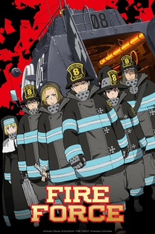
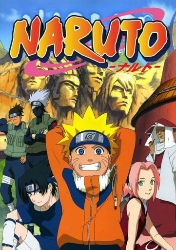
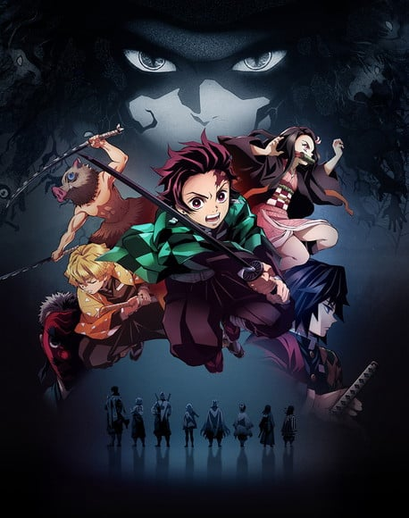
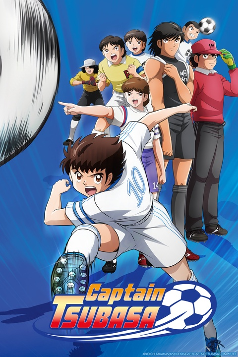

-
x

one piece
Houve um homem que conquistou tudo aquilo que o mundo tinha a oferecer, o lendário Rei dos Piratas, Gold Roger. Capturado e condenado à execução pelo Governo Mundial, suas últimas palavras lançaram legiões aos mares. "Meu tesouro? Se quiserem, podem pegá-lo. Procurem-no! Ele contém tudo que este mundo pode oferecer!". Foi a revelação do maior tesouro, o One Piece, cobiçado por homens de todo o mundo, sonhando com fama e riqueza imensuráveis... Assim começou a Grande Era dos Piratas!
Episódios: 1075
-
x

fire force
Shinra e seus companheiros estão prontos para entrar para a Brigada de Incêndio para impedir que os demônios flamejantes, chamados de Infernais, incendeiem toda a cidade!
Episódios: 48
-
x
Hunter x Hunter
Monstros amedrontadores, criaturas exóticas, riquezas vastas, tesouros misteriosos, terras vis e terras inexploradas... Gon parte em uma aventura para se tornar um caçador profissional que arrisca a própria vida em busca do desconhecido. Pelo caminho, ele conhece outros participantes da Prova dos Caçadores: Kurapika, Leorio e Killua. Será Gon capaz de vencer os grandes desafios da Prova de Caçadores e se tornar o melhor do mundo? Esta jornada selvagem e épica está prestes a começar!!
Episódios: 149
-
x

Naruto Clássico
A Vila Oculta da Folha é lar dos ninjas mais sorrateiros. Mas doze anos atrás, uma temível Raposa de Nove Caudas aterrorizou a vila, até ser derrotada e selada no corpo de um garoto recém-nascido
Episódios: 220
-
x

Kimetsu No Yaiba
Japão, era Taisho. Tanjiro, um bondoso jovem que ganha a vida vendendo carvão, descobre que sua família foi massacrada por um demônio. E pra piorar, Nezuko, sua irmã mais nova e única sobrevivente, também foi transformada num demônio. Arrasado com esta sombria realidade, Tanjiro decide se tornar um matador de demônios para fazer sua irmã voltar a ser humana, e para matar o demônio que matou sua família. Um triste conto sobre dois irmãos, onde os destinos dos humanos e dos demônios se entrelaçam, começa agora.
Episódios: 56
-
x

Captain Tsubasa
Esta é a história de Tsubasa Ozora, um prodígio do futebol que é transferido para a Escola Primária Nankatsu e cresce como jogador de futebol ao batalhar contra rivais de todo o Japão como Genzo Wakabayashi e Kojiro Hyuga. Com uma história refrescante, personagens únicos e técnicas poderosas que todos querem imitar, vem de um mangá cuja popularidade atravessou oceanos e chegou ao mundo todo. Dizem que por causa disso, se inspirou o nascimento de muitos jogadores de futebol profissional no Japão e no exterior.
Episódios: 28